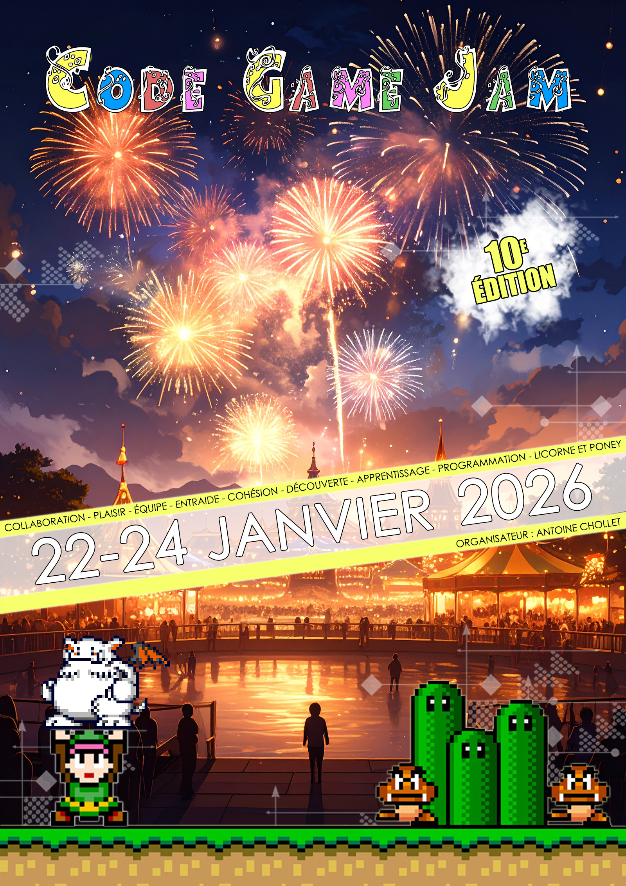
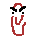

Fate Of The Click V1

Project Context and Overview
This project was created for the Code Game Jam 2026. Our team of four first-year IT students had 30 hours to develop a game from scratch based on the theme "do clicks" or "click party". We decided to create a game centered around a folder named Foldy, where the goal is to survive waves of mouse pointers trying to click and explore your files.
Enemies and Bosses
The game features several enemies, including Clippy, Sniper Cursor, and Classic Cursor, each with unique behavior patterns that challenge the player's reflexes and strategy.

Gameplay Mechanics
Players control Foldy by dodging attacking cursors. The game progressively increases in difficulty by introducing new cursor types and enemy waves. Players can collect power-ups to heal or increase their damage. The core mechanic revolves around the projectiles fired by Foldy.
Development Highlights
The game was built using a collaborative approach, dividing tasks among team members for programming, art, and level design. Prototyping under tight time constraints emphasized rapid iteration, problem-solving, and teamwork.